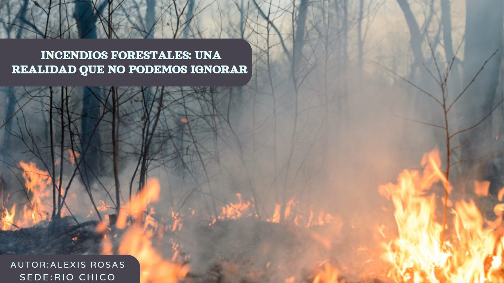
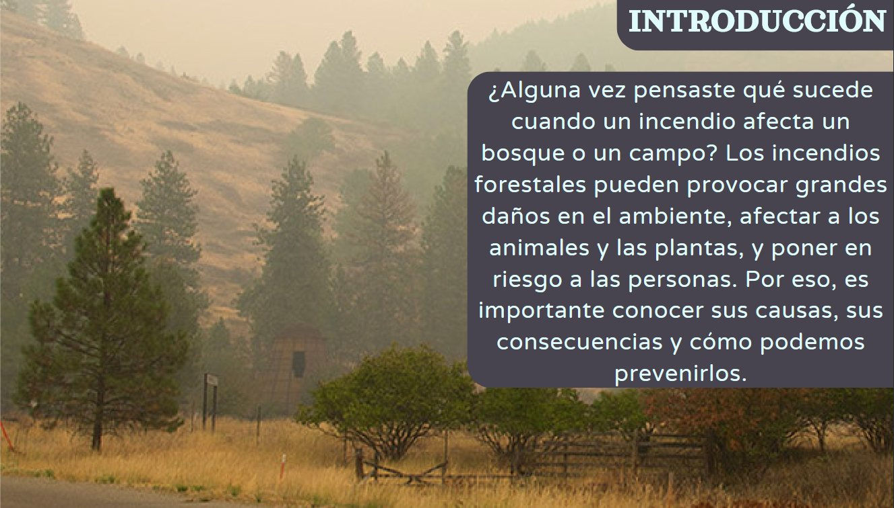
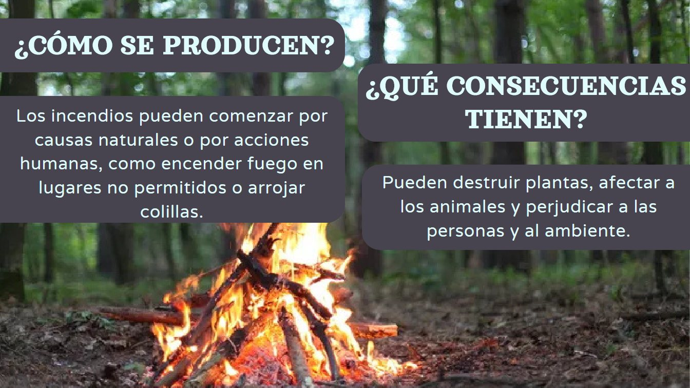
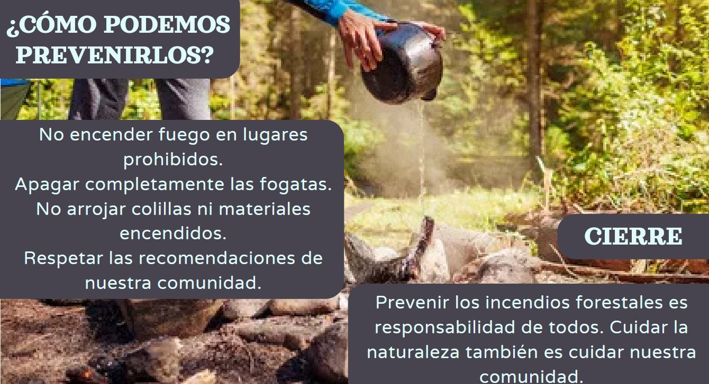

¿Alguna vez pensaste qué sucede cuando un incendio afecta un bosque o un campo?
Los incendios forestales pueden provocar grandes daños en el ambiente, afectar a los animales y las plantas, y poner en riesgo a las personas. Por eso, es importante conocer sus causas, sus consecuencias y cómo podemos prevenirlos.

¿Cómo se producen?
Los incendios pueden comenzar por causas naturales o por acciones humanas, como encender fuego en lugares no permitidos o arrojar colillas.

¿Qué consecuencias tienen?
Pueden destruir plantas, afectar a los animales y perjudicar a las personas y al ambiente.

¿Cómo podemos prevenirlos?
- No encender fuego en lugares prohibidos.
- Apagar completamente las fogatas.
- No arrojar colillas ni materiales encendidos.
- Respetar las recomendaciones de nuestra comunidad.
Prevenir los incendios forestales es responsabilidad de todos. Cuidar la naturaleza también es cuidar nuestra comunidad.
